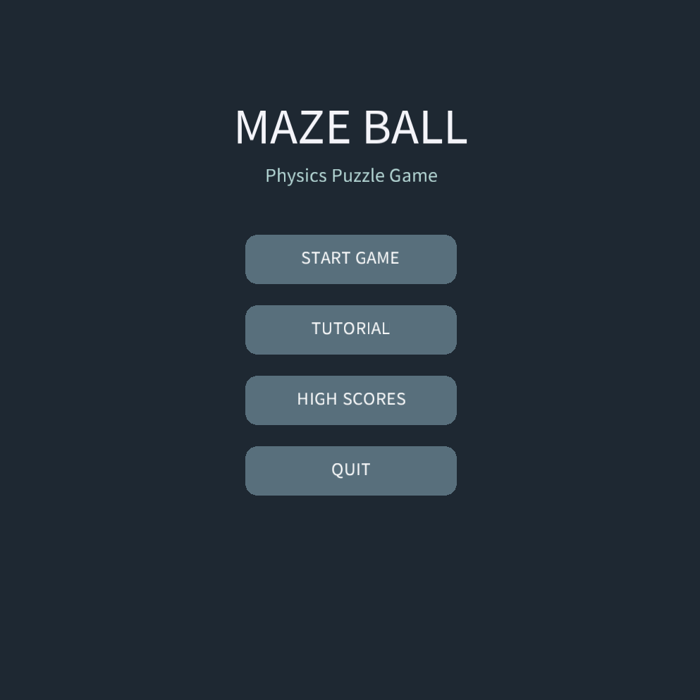
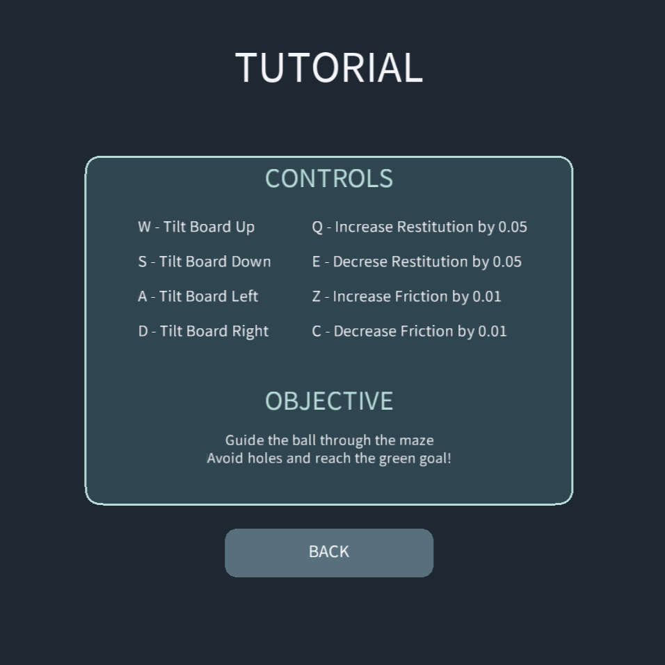
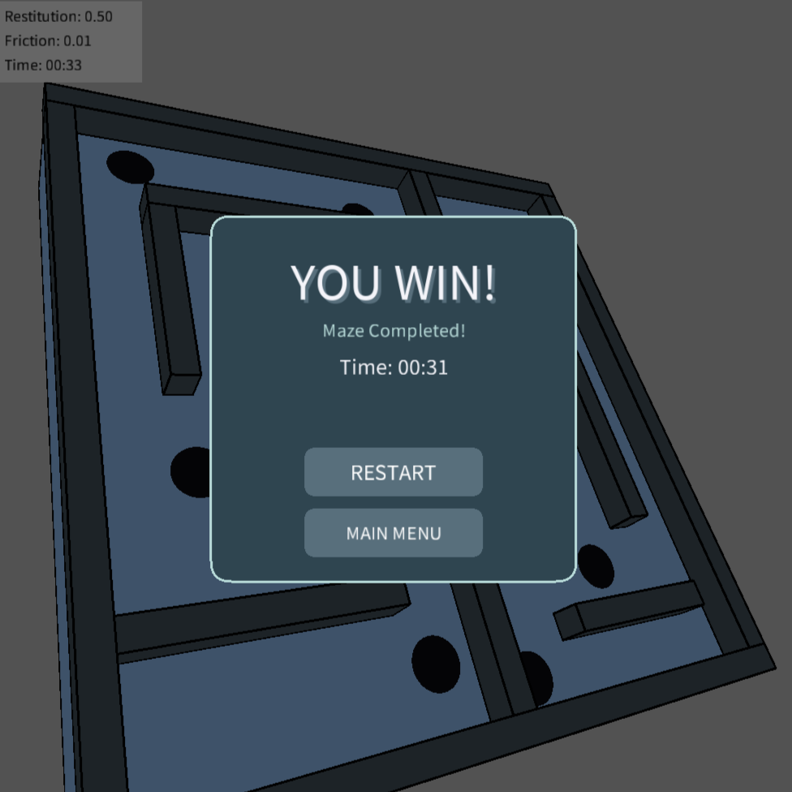

Maze Ball Physics Game
2026Maze Ball Physics Game is a 3D physics-based maze game developed using Processing (Java Mode). Players control a rolling ball by tilting the maze board, navigating around obstacles, avoiding holes, and reaching the goal area in the shortest time possible. The project implements realistic physics concepts such as gravity, friction, restitution, collision detection, and velocity-based movement. Additional features include a tutorial system, persistent leaderboard, win screen, and adjustable physics settings for gameplay experimentation.
- 3D Physics-Based Gameplay
- Gravity & Friction Simulation
- Collision Detection System
- Persistent High Score Leaderboard